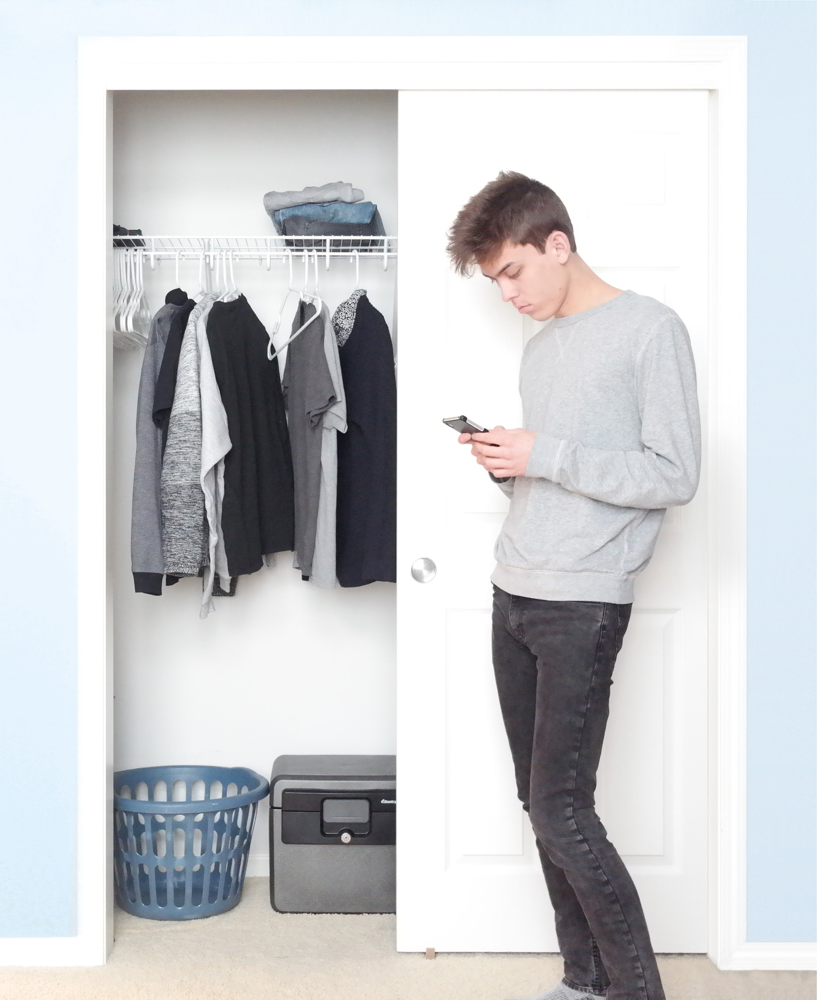

I'm Tyler Chen, Tufts 2017. To find out more about my interests, achievements and hobbies you can visit my personal website, chen.pw.
I've hosted a variety of my creative work on this site. I am currently working on a studio art minor at Tufts, with an emphasis in graphic design. While I primarily study math and physics. I find that in order to obtain solutions to problems in these fields, a large amount of creative thinking is required. To me, a studio art minor is simply a way to explore this creative process in a different context than equations and diagrams.
In graphic design there is an inherent need to convey a message about a brand or object. My work attempts to do this in a simple and straightforward fashion. In every piece I think through exactly what I want to convey and how to effectively do so. My goal is to create pieces which are minimal in terms content but which sufficiently send the messages I intend.
In the art I do outside of graphic design I do not generally embed any deeper meaning or message. Rather, I try to focus on the techniques used and aesthetics achieved. Pieces such as my CMYK bird drawing exemplify this idea. When drawing this piece, I was only focused on idea of manually producing a CMYK image and the technique required to do so. I did not care about the message or meaning that a viewer might try to take away from the end image.